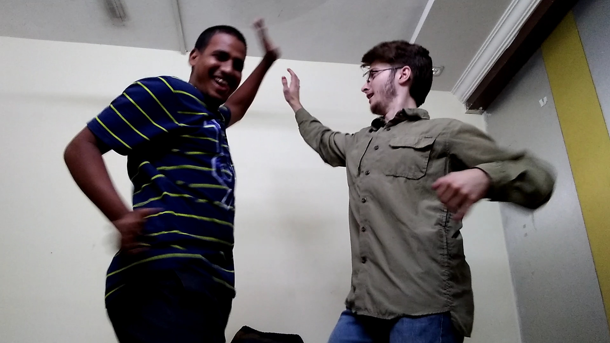

Please contact me with better ideas for a name!
Today is the Hindu festival Bonalu honoring a Goddess for something, and I stumbled upon a good ol' pre-industrial rave. A couple of guys are playing some suuuper loud drums as they parade down the road. Those kids were doing some serious dancing, and I'm not sure if you can see but the pots the women are holding have small fires lit in them! This party is literally "lit"!
Later Uma and I did a little dancing of out own. I think I'm better at Indian dancing than American (which isn't to say "good" at either).
